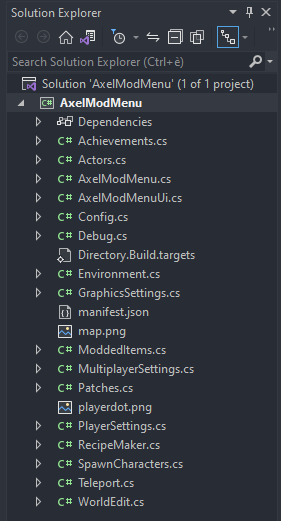

1.8 - C# classes
What are classes?
Now that we have seen different C# stuff, it's time to introduce classes.
We can see a class as a container of all the previous stuff (fields, methods etc.)
When we create a mod project, you will see that a class will be automatically created and that three predefined-methods are placed into it.
using SonsSdk;
namespace PlayerSpeedMod;
public class PlayerSpeedMod : SonsMod // start of the PlayerSpeedMod class
{
public PlayerSpeedMod()
{
//HarmonyPatchAll = true;
}
protected override void OnInitializeMod()
{
Config.Init();
}
protected override void OnSdkInitialized()
{
PlayerSpeedModUi.Create();
}
protected override void OnGameStart()
{
}
} // end of the PlayerSpeedMod class
Taking a game example in dnSpy, the FirstPersonCharacter is also a class, which contains all the different methods (e.g SetWalkSpeed and SetRunSpeed).
Since the mods we are making at this point are pretty simple, we don't need to create other classes.
But if we need to make something bigger, then they are pretty much a must to organize the code.
We can take my Mod menu as an example below.

As you can see I have used multiple .cs files, each corresponding to a different class with a specific purpose.
Accessibility of methods and fields between classes
As we talked in the methods and fields lessons before, we have different accessibility types we can assign to them.
Those are public, private, protected and internal for methods and public or private for fields.
Methods accessibility types
- public: a method with an accessibility type of public means that we can also access (and so call) that method from other classes
- private: a method with an accessibility type of private means that we can access (and so call) that method only from within the same class
- protected: a method with an accessibility type of protected means that we can access (and so call) that method only from within the same class or in class that is inherited from that class
- internal: a method with an accessibility type of internal means that we can access (and so call) that method only from within it's own assembly
public class PlayerSpeedMod : SonsMod
{
protected override void OnGameStart()
{
AnotherClass.PublicMethod(); // OK, PublicMethod() is a public method and can be accessed from the PlayerSpeedMod class
AnotherClass.PrivateMethod(); // NOT OK, PrivateMethod() is a private method and can't be accessed from the PlayerSpeedMod class
}
}
public class AnotherClass
{
public static void PublicMethod()
{
}
private static void PrivateMethod()
{
}
}
Fields accessibility types
- public: the field can be accessed also from other classes
- private: the field can be accessed only from within the same class
public class PlayerSpeedMod : SonsMod
{
protected override void OnGameStart()
{
AnotherClass.PublicNum = 2; // OK, PublicNum is a public field and can be accessed from the PlayerSpeedMod class
AnotherClass.privateNum = 2; // NOT OK, privateNum is a private field and can't be accessed from the PlayerSpeedMod class
}
}
public class AnotherClass // AnotherClass can be in the same .cs file, but normally you would put it in a separate one called AnotherClass.cs
{
public static int PublicNum = 5; // declaring a public field
private static int privateNum = 5; // declaring a private field
}
You will have probably noticed that our methods and fields in AnotherClass are declared as static.
This is needed when you want to access them directly from another class or inside a static method like we did.
In fact, almost all my mods uses the static keyword when declaring a field or a method.
One thing that also needs to be mentioned is that a method declared without any accessibility type will default to private and so it won't be accessible
from another class if not declared like public.
Along with that, you may have noticed classes also have accessibility type, but we can almost always use the public one for these mods.
Summing up
Classes are here to keep our code organized and allows to separate sections of code with different purposes.
Since we are still making some pretty small mods, you probably won't need to create other classes for now.